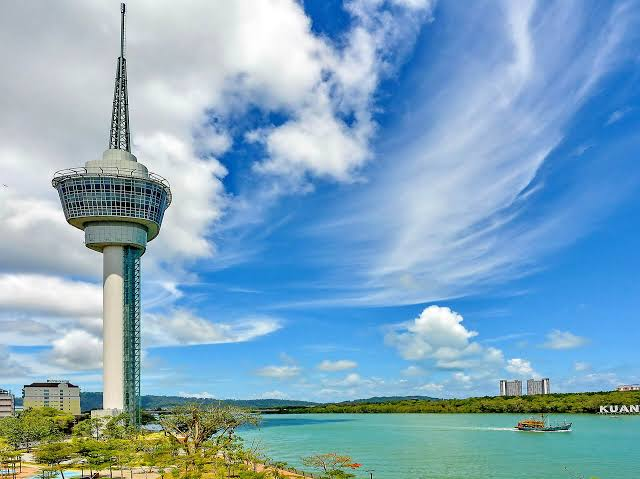

Pahang terkenal sebagai salah satu destinasi pelancongan paling menarik di Malaysia, dan Taman Negara berdiri megah sebagai antara tarikan pelancongan unggul yang wajib dikunjungi. Terletak di tengah Semenanjung Malaysia, kawasan perlindungan ini menawarkan pengalaman ekopelancongan yang sukar dicari ganti.
